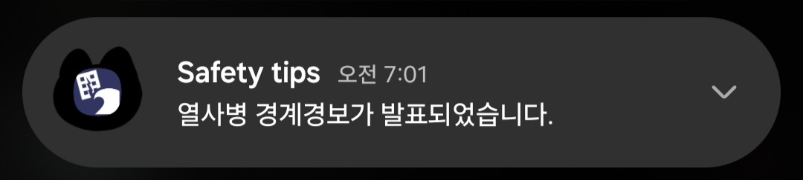

경보와 행동 안내 사이에 빈칸이 있습니다.
알림은 빠르게 도착하지만, 사용자가 지금 해야 할 행동과 확인해야 할 장소가 이어지지 않으면 판단이 멈춥니다.
2024 Workshop
안전디딤돌을 비롯한 재난안전 앱과 해외 사례를 워크샵에서 함께 탐색하며, 경보·지도·행동요령이 시민의 다음 판단으로 이어지는지 진단했습니다.
Workshop Question
참가자들은 재난안전 앱을 직접 살펴보며 정보가 어디에 배치되는지, 경보 이후 행동 안내가 얼마나 구체적인지, 대피소와 준비물 정보가 시민의 상황에 맞게 연결되는지 확인했습니다.



알림은 빠르게 도착하지만, 사용자가 지금 해야 할 행동과 확인해야 할 장소가 이어지지 않으면 판단이 멈춥니다.
위치 표시는 유용하지만, 접근 가능한 입구와 운영 여부, 현장 표지, 대피 경로가 함께 있어야 실제 이동으로 이어집니다.
외국인, 장애인, 영유아 동반자, 지병이 있는 사람은 같은 재난에서도 필요한 안내와 데이터가 다릅니다.
Output
이 워크샵은 이후 재난정보 수요자 분류, 재난가방 워크샵, 대피소 데이터 항목 제안으로 이어지는 출발점이 되었습니다. 공개 페이지에서는 원본 작업자료 대신 UX 진단 관점과 사례 이미지만 정리합니다.